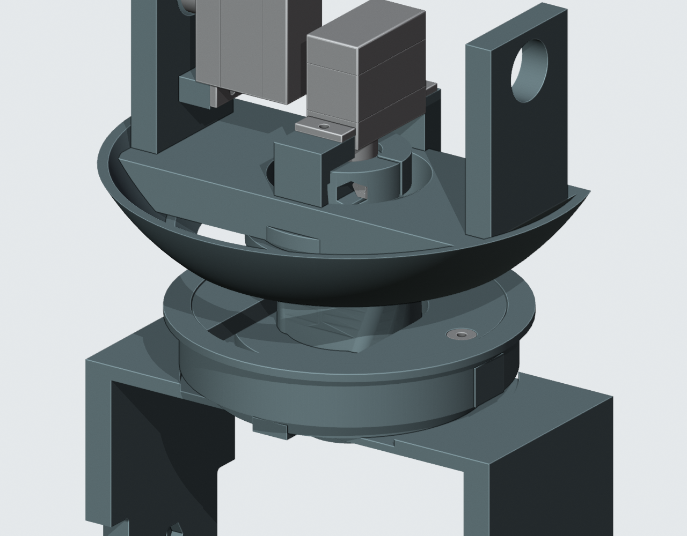
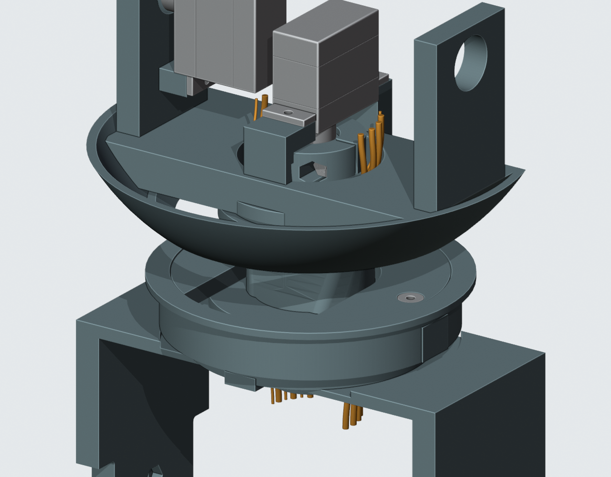

颈部通道与压板孔壁已修正
V1.2-M1.49 · 2026-10-05T17:02:12.144986+00:00
C5与K1均已按用户确认应用。主模型、STL、预览、电子细模与V1.2-M1.49-A1已同步。
偏航轴承改为6806ZZ（30×42×7mm）；沿用三件现有颈部打印件。两侧配对孔及螺钉/嵌件各向外移动0.2mm，嵌件孔最薄侧壁恢复至名义1.675mm。压板外径60.4mm，外围环内径61.0mm、外径65.4mm。
与M1.48逐件比较，共8个现有对象变化，其余201件实体几何与位置保持。机器人仍为16件打印件，未增加螺钉。七条粗线只是容量规划，不能当作已选微型连接器线材。

当前保存模型的颈部与防脱结构。
11条局部样线；尚未连接两端，也未完成固定和带线装配。压板孔壁修正
 原C5与已采用K1实体剖面。1.6mm是设计预留，不是强度认证。
原C5与已采用K1实体剖面。1.6mm是设计预留，不是强度认证。装配方法
- 桥座离机预装嵌件、螺母与6806轴承。
- C形压板从侧面套入偏航转动座，与预装舵机的转动座一起下放；俯仰头托后装。
- 偏航转动座转至+60°，用2mm内六角扳手从上方锁紧两枚M3×8，再回零位。压板固定在桥座上，不随头部转动。
- 再装俯仰头托与头壳。维修时先拆俯仰总成；反力夹初装与完整带线工序仍待完成。
本轮检查
125项通过、0项失败。批准候选实体比对、配对孔/嵌件材料、130个头部组合姿态、压板侧向装入、轴承和头座下放、螺钉与工具空间及21件STL回读通过。局部头壳最小采样净距0.420mm；生成过渡侧壁采样2.228mm。硬件原生文件及合同581份哈希保持。
颈部实体检查 · 防脱与装入检查 · 孔壁修正与确认 · 执行命令 · 6806 PA12试配片 · 当前装配视频
仍未关闭
| 反力夹口初次装配 | 反力夹口局部薄边及初装仍未修复。历史M1.47复核中的直柄工具及反力件上移路线失败；本轮颈部调整未改反力夹本身，但必须在当前总成上重新规划并检查初装。不能把无软线的压板/轴承装入PASS当作反力连接已完成；最终舵盘资料仍缺。 |
| 完整线束 | C5颈部容量方案与K1孔壁修正已应用M1.49：6806ZZ30×42×7轴承、三件现有打印件及四枚配对紧固件位置同步。11条局部规划导线通过当前模型的130姿态检查；头壳最小采样净距0.420mm、过渡侧壁采样2.228mm。七条Ø1.4224仍为规划包络，并非已选SH/GH线材。完整端部连接、线间排布、固定/应力释放、带线装配和供应商制作图仍未完成。 |
| 未定采购件与安装 | 现成软轮胎未定型。A7/C4已核对112封装、280焊盘、147过孔及机械接口同C3/A3；收到电源板39项视觉处置、70条引出说明和ERC/DRC零项报告。真实出线、带线取件及装后JP70/TP71维护仍未定。C4与PHC1均未应用正式板或主模型。 |
| 传动与插接资料 | SCS0009舵盘/短轴锁紧及线序视图、S288输出自攻螺钉、WeAct E孔针与插接长度、PHR8真实出线仍缺。A7补齐37行头部电气针脚及SH/GH目录候选；实际插合视图、相机完整FPC、USB尾线和压接过渡未确定，不能按目录候选冒充实物配套。 |
| 质量与驱动预算 | M1.49名义已建模质量1.321kg，超过1.0–1.2kg工程目标。两颗未布置制动电阻另计标称3.8g，候选部分合计1.325kg；未选模块、完整线束和热隔离固定仍缺。不是称重或动力学验证。 |
| 实物与打印验证 | CAM/相机照片估计细节、喇叭安装耳、电池与出线、排针排母实际插接、PA12配合和紧固、承载/蠕变/冲击、声学、温升与平衡需实物。 |
PROTOTYPE / UNVALIDATED。没有制造或采购放行；完整线束及反力连接初装仍有数字设计工作。PA12强度、实际配合与动态验证待实物。
当前主模型 SHA256：89cb07f571367bf87b627c771998d0cc0c28b873be575afdb4002c9bcf5b499f